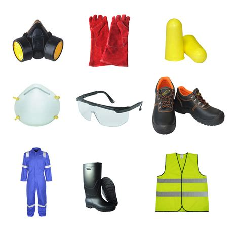
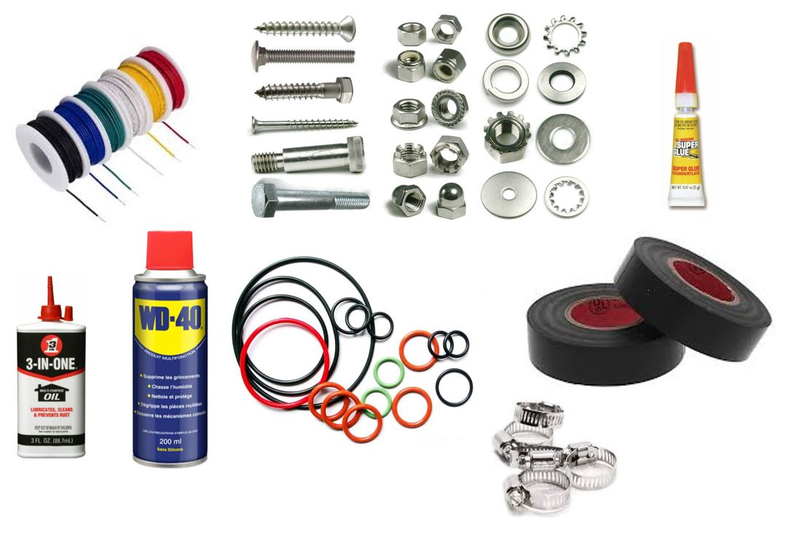
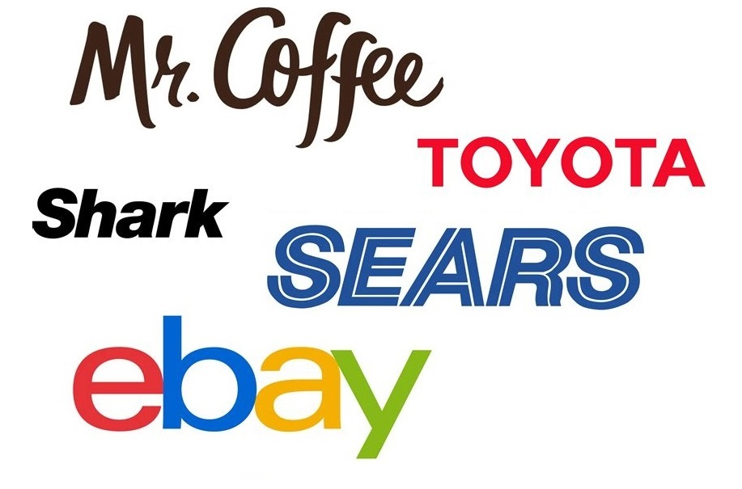
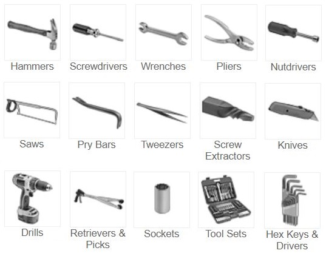
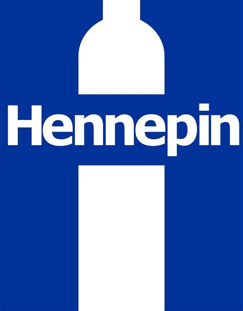

The content below will help you on your way to fixing.
As always, Safety is first. Never do anything you are not comfortable doing. Electricity, moving parts, and sharp surfaces are risks during fixing. Make sure to wear the right protective equipment. Safety glasses, ear plugs, and gloves are important gear to have and use.
Google your local hardware store for safety equipment.
McMaster-Carr has all the safety gear you will ever need.
There are many resources for figuring out how to fix something. Whether you like to see a video or read the step-by-step instructions, it is not hard to find what you need.
IFIXIT is a fixing-specific site with great information to help you fix items.
Google can provide good results.
YouTube is also a great resource.
Twin Cities Fix-It Clinics - Volunteer Vids are great examples of what you can do as a fixer.
You will need a variety of supplies to fix items. Batteries, fuses, wire, tape, and glue are common items. Start a kit and expand as you need.
Target has basic items for fixing.
McMaster-Carr has everything to fix anything.
Fixes can require specific parts to get something working again. The best source is usually the manufacturer, but other options are available.
ebay can be a source of obscure part and part at a lower cost.
McMaster-Carr has many general parts, available quick, but at a slightly higher cost.
Google is always a good resource for finding what you need.
Tools are necessary for fixing items. A set of basic tools (screw drivers, spudgers, wrenches, and pliers) can go a long way. As you progress in fixing, your tool box will fill up. Quality tools will last a lifetime of reliable service.
Craftsman is my favorite tool brand.
Stanley and other name brands are very good and are priced reasonably.
McMaster-Carr has a huge selection of basic and unique tools.
Once you feel comfortable with a variety of fixes, think about volunteering. You can help others fix their broken items and help them become a Fixer themselves! FixIt Clinics and fixing groups/clubs are all over the world. Take a look to find one near you.
Hennepin County Fix-It Clinic was one of the first in the nation.
Google to a FixIt Clinic near you or anywhere in the world!